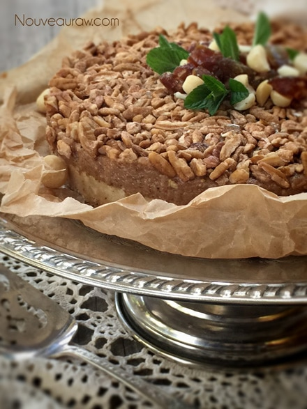
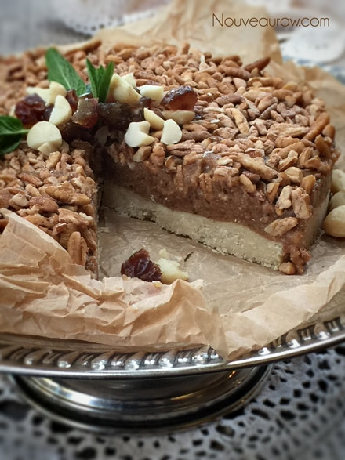

Amede Pecan Pie Bars

~ raw, vegan, gluten-free, Paleo ~
I bet many of you are questioning the name of these bars. I created this recipe last week as I was preparing for our “Goodbye” potluck, as we were heading off to Alaska.
A dear friend of ours, Leslie, came to the party and fell head-over-heels for these bars. She asked that I name them after her. So to honor her, I did just that!
Amede Pecan Pie Bars.
Leslie is Nigerian, and her root name is, Amede (pronounced Aaah-me, Amie :) It means “Life given Water” and “Loved by a multitude” How special is that! So here you go, my dear Leslie. :) This bar turned out divine.
Nobody could get over the fact that this was a raw dessert, which is common with most raw desserts. I will be making this again for sure! What a great dessert come Fall. You could quickly adapt this into a pie pan and serve it as a pie. Oooooh, and with raw vanilla bean ice cream… Hmmm, my wheels are turning.
4/2015 Update – I originally posted this recipe back in 2010. I made this for some company that is coming to visit, so I thought that I would update the photos. The recipe is untouched. You can present this recipe cut into bar shapes (which I did initially) or in slices as pictured here.
Yields 9×9″ square or 7″ round Springform pan
Crust:
Filling:
- 1 cup raw pecans, soaked & dehydrated
- 1/4 cup water
- 1/2 cup maple syrup
- 1 1/2 cups Medjool dates, pitted
- 1/2 Tbsp almond extract
- 1/4 tsp Himalayan pink salt
- 1 tsp ground Ceylon cinnamon
- 1/4 tsp cayenne pepper
Topping:
Preparation:
Crust:
- In the food processor, using your “S” blade, process the macadamia nuts and salt to a dough-like consistency.
- Be careful to not over-process.
- If you do, you will release too much of the oil found in the nuts.
- Press “crust” in the springform pan.
Filling:
- In the food processor, break the pecans down to a fine dust. Set aside in a bowl.
- Back in the food processor bowl combine the; water, maple syrup, dates, almond extract, salt, cinnamon, and cayenne pepper. Process together.
- If the dates are really dry, it will best to rehydrate them. Place in a bowl and add enough hot water to cover them. Let them sit for 10 minutes.
- Once they are done soaking, drain, and discard the soak water. Hand-squeeze the excess water from them.
- By rehydrating them, it will make it much easier to process them into a paste.
- To make Paleo, omit the agave.
- Add in the ground pecans and blend to a beautiful paste.
- Layer the filling on top of the crust and add the roughly chopped pecans.
- Chill for a few hours to firm it up a bit.
- Cut into squares, serve and enjoy!
- Note – the filling layer softens when left out at room temp.
- I recommend freezing this dessert. Once frozen, cut into serving sizes and serve.
- Store leftovers, single-serving pieces in the fridge for up to 5-7 days, or in the freezer for 1 month.


© AmieSue.com